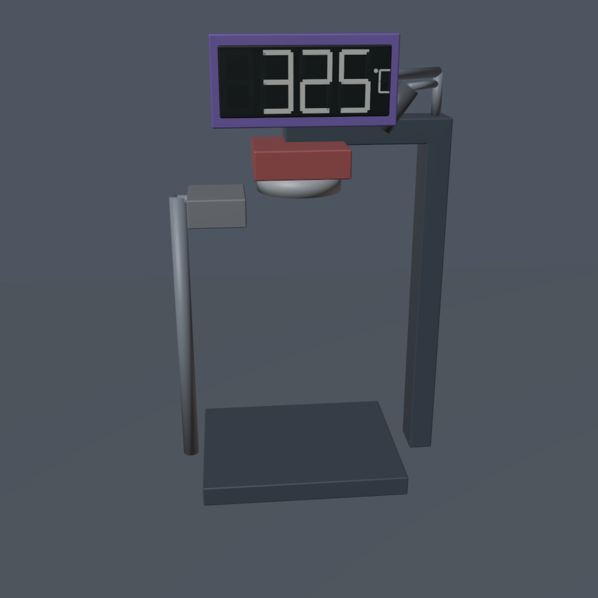
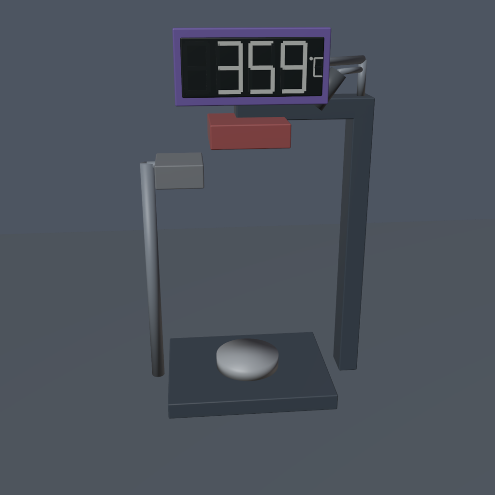
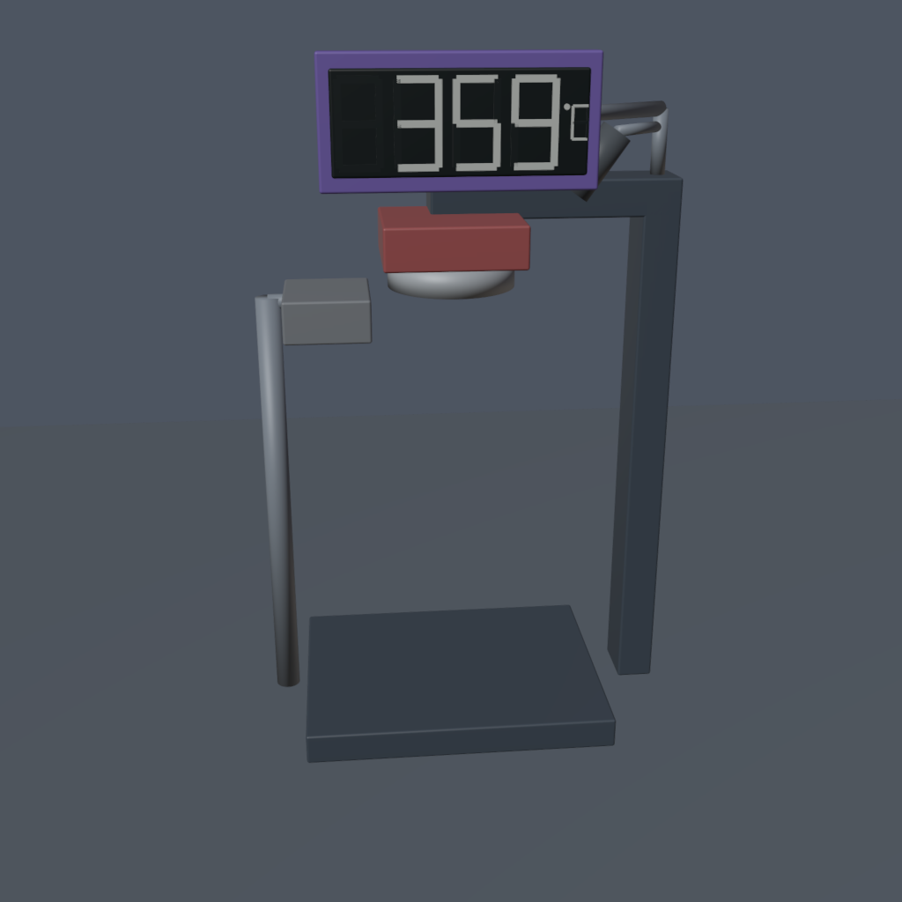
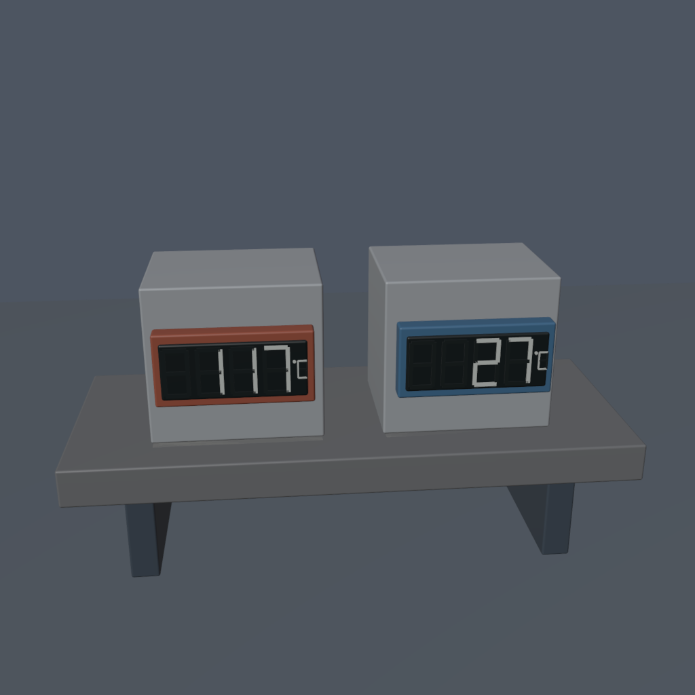
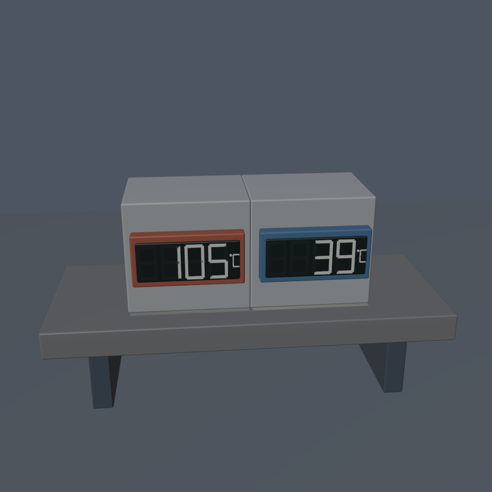
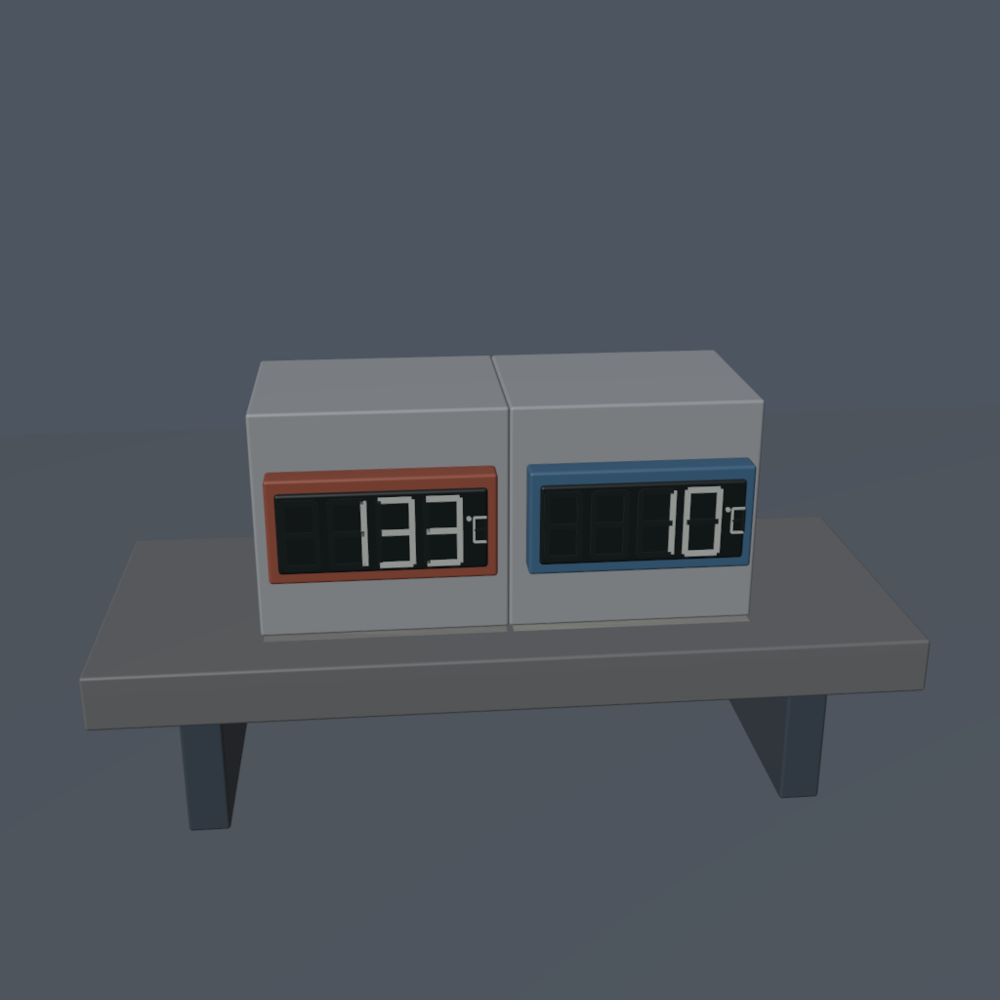

正式视频正在重渲染；以下为真实生成器预览帧，尚不是最终审核材料。屏幕显示整数摄氏温度，无悬浮文字。返回四项总览
nickel_curie_magnetic_retention · f34307fc9280de4a9a90b3643955caeeb4e0a7f5



thermal_contact_reverse_heat_flow · f3d36e0ad2baf58387a3c4819df17b020185720d


